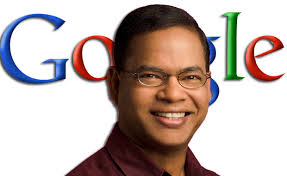

In the fall of my senior year
at Cornell, I was
offered a software engineering job at Facebook.
Before moving to New York, I made two promises to myself: that I would row five kilometers a day, and that I would focus exclusively on "work" while at work. I believed that if I followed these two rules, I could avoid most post-grad nightmares.
Accepting the Facebook offer led to dramatic changes in how I related to other people. I developed an intense interest in 'hacking' the devices and accounts of my friends, acquaintances, and lovers. As a result, just two years after graduation, I found myself somewhere very, very far away.
Before moving to New York, I made two promises to myself: that I would row five kilometers a day, and that I would focus exclusively on "work" while at work. I believed that if I followed these two rules, I could avoid most post-grad nightmares.
Accepting the Facebook offer led to dramatic changes in how I related to other people. I developed an intense interest in 'hacking' the devices and accounts of my friends, acquaintances, and lovers. As a result, just two years after graduation, I found myself somewhere very, very far away.
To an outside observer, this probably sounds like risky and extreme behavior. To me, it mostly felt like a positive development: I had finally found my passion as a programmer. I had found the place where my interests in programming and literature intersected.
My whole life I've felt that I'm surrounded by stories of beauty that I couldn't access because I was relatively introverted, didn't possess a strong speaking voice, etc. I wanted my cake, but I didn't want to ever have to eat it, if that makes sense. By covertly accessing all of the digital information about the lives of the people in my life, I suddenly could have my cake, every day. I felt the sense of connection to other people and the world that I had always craved. Perhaps unsuprisingly, the story of the first person I "hacked" is interesting, and personal.
The methods used to accomplish most cracking-style hacks are almost embarassing to me. If the general public realized that most hackers exploit "social engineering" tricks of the trade, like common criminals, hackers would get a whole lot less respect. It's not byzantine computer knowledge that makes a hacker a hacker, it's a lack of shame and a lot of dumb targets.
Abuse of trust is one of the most effective ways to gain access to valuable data. Part of Facebook's culture is that Facebook ostensibly places a high level of trust in its employees. [More on that here]. I think most people are unwilling to steal data from their employers due to organizational loyalty, intense punishments when caught, and the difficulty of finding a buyer for that information. On a personal level, something else seems to stop people from violating each other's personal data. For my purposes, opening up someone's laptop and clicking through their files is the same as reading their diary.
What does it mean, that most people, if left alone in a room with one of their friend's diaries, would respect that friend's privacy and leave it alone? To me, this is strange. The information in that diary could potentially really benefit them in the long run, perhaps deepen the relationship with that friend, or make you realize that you should stop being friends with that person. The friend is unlikely to be hurt by your having read the diary. Does this mean that people would rather ~not~ know the truth about the relationships in their lives, or believe that not knowing the truth is ideal? Or, does this mean that many people are fundamentally uninterested in the mental lives of their friends? These explanations all seem plausible to me. Or, there may just be very effective taboos in place that prevent any well-socialized individuals from reading private information.
The first time I violated someone's privacy was a simple passive case of abused trust.
I wrote a story about the experience, and when I showed it to Marie, she blocked me and never spoke to me again.
It seems that the truth is a lot more brutal than most people think. Or at least it is brutal with regards me and my life.
This is a story from when I was younger, during the messy "medical leave
from Cornell" period of my life. The summer before I returned to
school, I got an internship in New York via an internet friend. I
thought that my New York internship was a sign that I had arrived at
something close to a final truth about adult life, and was ready to put
the stuff I had done on the internet during my "medical leave" time
behind me. For example, my relationship with Marie Calloway.

I'd trade everything I have to be a pretty boy, or I guess a pretty girl. When I was in high school, I had a sense that my physical appearance and mannerisms grossed people at a fundamental level. This feeling has diminished over time, but I think this insecurity led to my fascination with Tom. After moving to New York and starting my job, I met my girlfriend, Marissa, almost immediately. Tom was her ex. They were still friends. "I know this seems like a dick move", said Marissa, "but you should hang out with Tom. You guys are both into computers." It became clear, over the course of a few nights out, that Tom was what I had always wanted to be. But I also discovered that he was fragile. On one of these fragile nights I helped Tom to a cab. He left his jacket with me, and in his jacket was his phone. I messaged him on facebook that he could pick it up anytime. His phone wasn't locked, and I immediately started looking through his recent messages. I didn't think much of it. I spent the rest of the day reading everything I could find. I searched for my name. "Yeah, he was nice. Kind of boring though," Tom had said to Marissa. "Oh?" said Marissa. "You made him seem a lot more interesting. He just talked about work and money," Tom continued. Marissa defended me, and they had a subdued fight where... Facebook's search function found only one other conversation where I was named explicitly. Tom talked to so many people, all the time. This was surprising to me, because I barely ever saw him using his phone. It was hard to understand what made him message "hey" to six or seven people at once. Some of the conversations would go somewhere, other's wouldn't. Randomly, Tom would have an intense conversation with someone, where he really spilled his guts. In a plaintive tone, he would talk about his stressors.
It was just Tom discussing who to invite out, one night two weeks
ago.
While reading through the old messages of friends and lovers, I
sometimes ended up reading conversations from my own past. I usually
felt the familiar dread and pain that came with seeing myself as others
saw me. None of the messages were old enough to allow for the
possibility that I'd changed since sending them. A person with more
willpower might have used the pain of these messages as motivation to
change himself. A more humble person might have realized that she
should be kinder to others. A person with more hustle might have
stopped reading, to avoid any loss of self-confidence or accumulation of
self-consciousness. For me, my own messages were mostly just an
unpleasant reminder of a reality that I thought I had haphazardly
transcended, or avoided.
It was surprising that within a month of moving to New York, I was
in a relationship, sleeping with someone that really lit up my life.
Marissa was my first adult relationship, I think. It was more than a little surreal: us, on Christmas eve, dancing in front of our small Christmas tree, staring into each other's eyes, only half drunk. The amount of comfort and pleasure we managed to enjoy during any given weekend never ceased to surprise me. We were two young people who had perfectly achieved our "goals", but could barely remember our dreams.
Marissa was a banker, but she made being a banker look easy. She didn't really buy into the whole "insane work hours" thing. She was effective and composed, and had a moderate, genuine interest in the financial services industry. Despite her lack of interest in office politics, she knew that she would not be fired. Also, she was attractive. Blonde. She looked like a female banker.
The only thing that hinted at her past was the fact that she wore too much perfume. I think I have a thing for women -- (I always make a point to call the "girls" of our generation "women") -- I think I have a thing for women who wear too much perfume.
Marissa was my first adult relationship, I think. It was more than a little surreal: us, on Christmas eve, dancing in front of our small Christmas tree, staring into each other's eyes, only half drunk. The amount of comfort and pleasure we managed to enjoy during any given weekend never ceased to surprise me. We were two young people who had perfectly achieved our "goals", but could barely remember our dreams.
Marissa was a banker, but she made being a banker look easy. She didn't really buy into the whole "insane work hours" thing. She was effective and composed, and had a moderate, genuine interest in the financial services industry. Despite her lack of interest in office politics, she knew that she would not be fired. Also, she was attractive. Blonde. She looked like a female banker.
The only thing that hinted at her past was the fact that she wore too much perfume. I think I have a thing for women -- (I always make a point to call the "girls" of our generation "women") -- I think I have a thing for women who wear too much perfume.
Story about me going to Toronto. I feel weird about writing about the
physical characteristics of Ally, the girl who I slept with in Toronto.
She wore a lot of perfume and drove a BMW. My friend came with me to
Toronto.
I'd wake up and drink a glass of ice water, and then row on the
rowing
machine.
// further high-level description of working life charms
// joy of rowing
// joy of working at work
I was a Hadoop Framework engineer on the Messaging Infra[structure] team. I had arrived at my chosen area of expertise in a somewhat arbritrary fashion, but I figured that was typical. And I was quickly finding my true passion. I believed that if I lived this life, I could avoid most potential post-grad nightmare hells.
// further high-level description of working life charms
// joy of rowing
// joy of working at work
I was a Hadoop Framework engineer on the Messaging Infra[structure] team. I had arrived at my chosen area of expertise in a somewhat arbritrary fashion, but I figured that was typical. And I was quickly finding my true passion. I believed that if I lived this life, I could avoid most potential post-grad nightmare hells.
The rowing machine was the only sacred object in my apartment. It was situated so that I could see the Manhattan skyline while I rowed, and in the late fall and winter my heart was moved by the slow pulsing of the warning lights across the river.
My parents were confused by the young adult I became in college, and when I walked on to the rowing team, they had clung to my identity as a rower as one of the few positive facts they knew about me. As a result, almost all of my Christmas gifts during those years were rowing related. These gifts hung on the wall next to the rowing machine: a hand drawn poster from the 1920's commemorating Ivy League crews, parts of antique rowing shells, and, "embarassingly", pictures of me racing at Eastern Sprints and the IRAs. When people made fun of my shrine, I reminded myself that these items were proof that my parents loved me more than any of them.
When I arrived at Cornell for my sophomore year, I was determined to set myself up for a prestigious internship. In early September I put on my blazer and went to the career fair. I spent most of the day in the buzzing indoor track building, talking to employers.
I found that I enjoyed talking to the tech companies more than the banks. It was always very difficult to discern what exactly I was talking about when I was talking to the financial services companies. With the tech companies, I was able to stretch my superficial knowledge of programming in order to have interesting discussions with the recruiters. Many of them seemed to want to believe that they were doing something really special, technology-wise. A fat neckbeard representing an ad tech company made a lasting impression on me by asking if I knew what Hadoop was.
"No, what is it?" I asked.
"Oh, man. The next big thing. The current big thing," he said, rocking back and forth.
"Like, what is it though?"
"It's Apache's distributed MapReduce framework. It's how we can process millions of ad slots a minute. You should really look it up."
I did google it, and felt the familiar sense of wondering what was really going on: was this, and NoSQL, or NodeJS, just significant buzzwords, used like the names of bands in high school, or the different sectors at a bank? Over a year later, I would smile when my Database Systems class required us to implement the PageRank algorithm using the Hadoop framework. Computer Science had turned out to be more than emptiness, for me.
And a year after ~that~, one of the men indirectly responsible for the creation of Hadoop spoke in my Information Retrieval class. I was fascinated, because I had already watched a video of him talk about the role of 9/11 in Google's history, and had developed a pet theory: that the attack on the Twin Towers had led to the creation of the Map Reduce programming paradigm, and in turn the Hadoop framework that enabled many of the "big data" applications of the later 2000s.

Amit Singhal, director of search quality at Google, was away at a conference on September 11th, 2001. As the public searched for news about the attacks on the Twin Towers and the Pentagon, Amit and his colleagues realized that Google was dramatically failing to meet the nation's information need. Searches for "World Trade Center" led to web pages detailing the architecture of the now-destroyed buildings, or real estate listings. This was due to the fact that Google was only able to index the internet about once a month: the index used to fulfill searches did not reflect the current, dramatically different reality. Over a conference call, Amit and the Google engineers decided on a hacky solution: they simply added links to relevant news articles on Google's homepage. This didn't work: the massive amounts of traffic directed to these articles caused the news network's servers to crash almost instantly.
Amit and Krishna Bararat, a search architecture engineer, were trapped at the conference center in upstate New York until planes were allowed to fly again. Over the next few days, they sketched out the architecture of what would become Google News, a system that would index news websites constantly, ensuring that Google would be able to provide information about events that had just happened. Building this system would require rethinking Google's entire data pipeline. New programming models for distributed systems would need to be perfected in order to have enough computing power to simulataneously index thousands of news websites.
Over the next few years, Google News was developed, but Amit and Google realizes that just about everything needed to be indexed in "real time". In order to index the whole internet, every day, the programming methods used to create Google News would have to be formalized. In addition, Google realized that the rest of the internet had to catch up with Google. To address both of these concerns, in 2003 Krishna released "the MapReduce paper", which detailed the abstractions used by Google to think about their complicated distributed systems.
Something about the nature of MapReduce always felt very current and zeitgeisty to me, perhaps because of the adtech neckbeard at career fair, or perhaps because the MapReduce paradigm of millions of isolated units of data being accumulated, fragmented by a inscrutable hash function, and reduced to useful key-value pairs reminded me of the way real life was starting to work.
I developed a pretty safe system for reading arbritary messages from Facebook messenger. One of my (self-assigned) tasks was developing an effective test framework for the Hadoop message retrieval system, and I built the test suite so that it could retrieve messages specified by an encrypted query as a side-effect of running the tests. The set-up and tear down phase of the test would remove any identifying information about the "test" messages retrieved, "for security purposes", leaving only a daily audit log explaining the accesses.
I knew this power was too special to use for just making money or something, but too dangerous to do much of anything else with. Once my system worked well, I made an effort to delude myself that I was doing nothing wrong, in case I got caught somehow. I became an advocate for end-to-end encryption, and increased internal security that would prevent others from doing what I had done. I figured if someone reversed engineered the hidden functionality of my code, I would just point out that this was exactly why we needed client-side encryption. There were secuity holes everywhere, I wouldn't get in trouble for having unwittingly created one, especially if I had a proposal that would effectively eliminate it.
We were in the drug place together. In the bath. In the drug place
everything was very flat. Marissa looked like a tall, scared animal.
She was distant: fame, shame, and the spirit of the computer were
interwined.
"You're still fucking Tom," I said.
"You're very intuitive," she said.
I knew our relationship was better and that it would be pretty hard for
her to find someone as psychotic as me, and that she was bored and
needed that part of my personality.
"Cocaine. It's soaked in blood," she said.
"You shithead," I said, bending over. I had made a promise to myself, my junior year of college, that I wouldn't do
we both miss being that excited about someone. fetish for dating writers. there seem to be a lot of them on okcupid. I am the danger. I guess we're afraid we'll get what we deserve. I figured [living in Castle Braid] was the least gentrifying way to live in Brooklyn.
insecure text. text that is vulenerable to A/B testing. writers have to expand their medium and tools.
Nobody likes you when you're 23.
It's not going to get easier. Just two years after graduation, I found myself looking at the childhood stuffed animals sitting by my monitor, wondering if they served the same purpose as photographs given to androids: to provide a physical anchor for false, implanted memories of a life.
"You shithead," I said, bending over. I had made a promise to myself, my junior year of college, that I wouldn't do
we both miss being that excited about someone. fetish for dating writers. there seem to be a lot of them on okcupid. I am the danger. I guess we're afraid we'll get what we deserve. I figured [living in Castle Braid] was the least gentrifying way to live in Brooklyn.
insecure text. text that is vulenerable to A/B testing. writers have to expand their medium and tools.
Nobody likes you when you're 23.
It's not going to get easier. Just two years after graduation, I found myself looking at the childhood stuffed animals sitting by my monitor, wondering if they served the same purpose as photographs given to androids: to provide a physical anchor for false, implanted memories of a life.